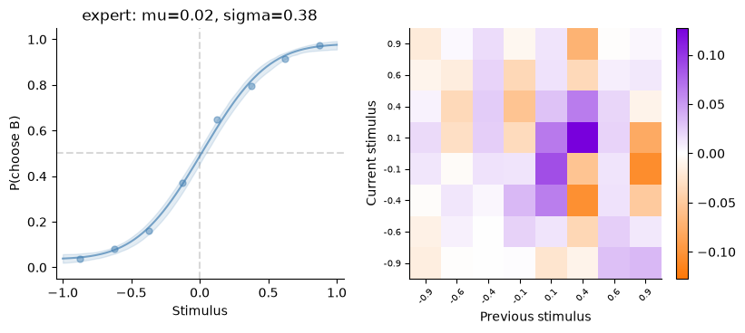
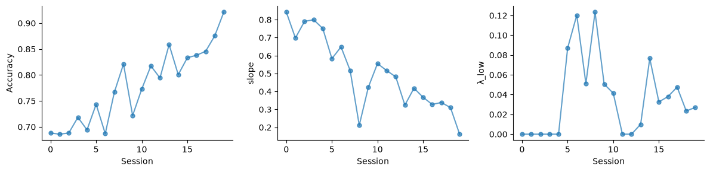
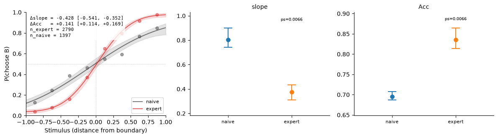

A 2-AFC analysis, end to end#
This tutorial takes one analysis through every layer of the library: load → select sessions → filter trials → compute (statistics, readouts, contrasts) → plot. It needs no data: a synthetic animal stands in for one loaded from your files, with the same structure. The library knows no experiment; distributions, stages, session types and presets come from your config (the configuration guide). For the details behind each step, see the data structures and the statistics reference.
import matplotlib.pyplot as plt
from behav_utils import (
PsychometricModel,
TrialArrays,
apply_style,
compute_psychometric_curve,
compute_stats,
compute_update_matrix,
filter_trials,
generate_synthetic_animal,
list_stats,
plot_psychometric_curve,
plot_update_matrix,
select_sessions,
)
from behav_utils.stats import PSYCHOMETRIC
apply_style()
print(f'{len(list_stats())} registered statistics; psychometric outputs: {PSYCHOMETRIC}')
53 registered statistics; psychometric outputs: ('mu', 'sigma', 'lapse_low', 'lapse_high')
1 · Data: an animal with 20 sessions that gets better#
generate_synthetic_animal builds the same AnimalData → SessionData → TrialData structure the loader
produces from CSVs, from any model (behav_utils.models). Here one PsychometricModel per session
sharpens its slope and loses lapses, so there is something to see in a trajectory.
lapse = [max(0.01, 0.15 - i * 0.006) for i in range(20)]
models = [PsychometricModel(sigma=0.8 - i * 0.03, lapse_low=lapse[i] / 2, lapse_high=lapse[i] / 2) for i in range(20)]
animal = generate_synthetic_animal(models, n_sessions=20, trials_per_session=300, animal_id='SYN01', rng=1)
animal.session_table.head() # one row per session: counts + accuracy, for picking sessions
| session_id | animal_id | experimenter | date | start | source_id | source | session_idx | stage | distribution | session_type | session_type_source | task | n_trials | n_valid | n_abort | n_no_response | accuracy | |
|---|---|---|---|---|---|---|---|---|---|---|---|---|---|---|---|---|---|---|
| 0 | SYN01_20260105 | SYN01 | 2026-01-05 | None | None | None | 0 | task | Unknown | regular | derived | two_afc | 300 | 279 | 18 | 21 | 0.688172 | |
| 1 | SYN01_20260106 | SYN01 | 2026-01-06 | None | None | None | 1 | task | Unknown | regular | derived | two_afc | 300 | 277 | 14 | 23 | 0.685921 | |
| 2 | SYN01_20260107 | SYN01 | 2026-01-07 | None | None | None | 2 | task | Unknown | regular | derived | two_afc | 300 | 279 | 17 | 21 | 0.688172 | |
| 3 | SYN01_20260108 | SYN01 | 2026-01-08 | None | None | None | 3 | task | Unknown | regular | derived | two_afc | 300 | 284 | 15 | 16 | 0.718310 | |
| 4 | SYN01_20260109 | SYN01 | 2026-01-09 | None | None | None | 4 | task | Unknown | regular | derived | two_afc | 300 | 278 | 19 | 22 | 0.694245 |
2 · Select sessions, filter trials, pool#
select_sessions takes either a registered preset (from the config’s session_presets) or ad-hoc
fields; filter_trials(trial_type=...) drops aborts and selects opto / non-opto / all trials
(no-response trials stay: their choice is NaN and every statistic ignores them); TrialArrays.from_sessions
pools what is left into the flat arrays every statistic consumes — with the lag-1 prev_* fields
frozen, so resampling later cannot break trial history. Each row carries a trial_key, so any other
per-trial dataset can be aligned to exactly the trials a statistic used.
from behav_utils import SessionFilter, register_preset
register_preset('expert', SessionFilter(stage='task', last_fraction=0.5, min_accuracy=0.6))
register_preset('naive', SessionFilter(stage='task', first_n=5))
expert = filter_trials(select_sessions(animal, preset='expert'))
naive = filter_trials(select_sessions(animal, preset='naive'))
arrays = TrialArrays.from_sessions(expert)
print(f'expert: {len(expert)} sessions, {arrays.n_trials} trials ({arrays.n_responded} responded) | '
f'naive: {len(naive)} sessions')
expert: 10 sessions, 2853 trials (2790 responded) | naive: 5 sessions
3 · Scalar statistics#
compute_stats(arrays, names) → one float Series. Fitters (psychometric, logistic_history, …)
run once however many of their outputs you ask for.
s = compute_stats(arrays, ['accuracy', 'side_bias', 'recency', 'win_stay', 'lose_shift', *PSYCHOMETRIC, 'pse'])
s.round(3)
accuracy 0.836
side_bias 0.004
recency -0.002
win_stay -0.040
lose_shift 0.452
mu 0.020
sigma 0.375
lapse_low 0.036
lapse_high 0.020
pse 0.012
Name: value, dtype: float64
4 · Readouts and their plotters#
Array-valued readouts are dataclasses with one draw-only plot_x(readout, ax=…) each: the psychometric
curve (with a bootstrap band), the update matrix (how the previous stimulus shifts the current choice),
the conditional psychometric.
curve = compute_psychometric_curve(arrays, n_bootstrap=200)
um = compute_update_matrix(arrays)
fig, axes = plt.subplots(1, 2, figsize=(9, 3.6))
plot_psychometric_curve(curve, ax=axes[0])
plot_update_matrix(um, ax=axes[1])
axes[0].set_title(f'expert: mu={curve.mu:.2f}, sigma={curve.sigma:.2f}')
Text(0.5, 1.0, 'expert: mu=0.02, sigma=0.38')

5 · Per-session trajectory#
compute_phase_stats(sessions, names, per_session=True) gives the pooled values and one row per session;
plot_trajectory draws one stat against session order.
from behav_utils import compute_phase_stats, plot_trajectory
all_sessions = filter_trials(select_sessions(animal, stage='task'))
r = compute_phase_stats(all_sessions, ['accuracy', 'sigma', 'lapse_low'], per_session=True)
fig, axes = plt.subplots(1, 3, figsize=(12, 3))
for ax, st in zip(axes, ['accuracy', 'sigma', 'lapse_low']):
plot_trajectory(r, st, ax=ax)
plt.tight_layout()

6 · Contrasts with valid uncertainty#
compute_delta_stat({label: sessions, …}, names, reference=…) returns a DeltaStats: per phase the
observed values and bootstrap draws, per contrast the difference with a bootstrap interval per resampling
unit and — when trials were randomised between the phases — a permutation p. Here naive vs expert were
not randomised per trial, so only the sessions unit is a valid test; the library lets you ask for
trials but the number would mean nothing, which is why units is explicit
(Resampling units explains which unit answers which question).
from behav_utils import compute_delta_stat
from behav_utils.plotting import plot_psychometric_comparison, plot_stat_comparison
# Different sessions → no permutation p (it is refused across sessions), sessions are the unit.
d = compute_delta_stat({'naive': naive, 'expert': expert}, ['accuracy', 'sigma', 'recency'], reference='naive',
n_bootstrap=300, units=('sessions',))
fig, axes = plt.subplots(1, 3, figsize=(12, 3.4))
plot_psychometric_comparison(d, ax=axes[0]) # both curves
plot_stat_comparison(d, 'sigma', ax=axes[1]) # one stat, phases side by side
plot_stat_comparison(d, 'accuracy', ax=axes[2])
plt.tight_layout()
list(d.contrasts.values())[0].table('sessions').round(3) # the tidy contrast table
| stat | diff | ci_lo | ci_hi | boot_p | perm_p | unit | |
|---|---|---|---|---|---|---|---|
| 0 | accuracy | 0.141 | 0.114 | 0.169 | 0.007 | NaN | sessions |
| 1 | sigma | -0.428 | -0.541 | -0.352 | 0.007 | NaN | sessions |
| 2 | recency | -0.057 | -0.097 | -0.015 | 0.007 | NaN | sessions |

7 · Across animals#
Group claims use the animal as the unit: one pooled row per animal (collect_rows), then a rank test
between groups (compare_groups) or a paired difference with an across-animal interval (paired_diff,
bootstrap_units). min_p is the smallest p the group sizes can produce: when it is above your threshold, a non-significant
result says nothing about the effect.
from behav_utils.analysis import collect_rows, compare_groups
rows = []
for i in range(6):
a = generate_synthetic_animal(PsychometricModel(sigma=0.3 if i < 3 else 0.5, lapse_low=0.025, lapse_high=0.025),
n_sessions=8, trials_per_session=300, animal_id=f'A{i:02d}', rng=10 + i)
ph = filter_trials(select_sessions(a, stage='task'), trial_type='non_opto')
r = compute_phase_stats(ph, ['accuracy', 'sigma']) # one pooled row per stat, stamped with the animal
rows += collect_rows(r.to_rows().to_dict('records'), animal=a.animal_id, group='sharp' if i < 3 else 'broad')
res = compare_groups(rows, groups=('sharp', 'broad')) # GroupComparison: res.test('sigma') is a RankTest
res.table()[['stat', 'n_a', 'n_b', 'median_a', 'median_b', 'p', 'min_p']].round(3)
| stat | n_a | n_b | median_a | median_b | p | min_p | |
|---|---|---|---|---|---|---|---|
| 0 | accuracy | 3 | 3 | 0.866 | 0.784 | 0.1 | 0.1 |
| 1 | sigma | 3 | 3 | 0.290 | 0.497 | 0.1 | 0.1 |
Where to go next#
The API reference has one page per sub-package.
The statistics reference lists every statistic, what a task must provide for it, and whether trials may be resampled for it.
From your files to an experiment loads behaviour from files on disk.
Concepts explains the pipeline’s rules, the stimulus axis and the resampling units.
Extending adds a statistic, readout, task, model or reader of your own.